窑主试炼 · 五窑闯关
答对每窑三题，集齐五窑印章，成为真正的"窑主"
趣味问答 · 点击展开答案
Q：定窑为什么又叫"白定"？
A：定窑以白釉瓷闻名，其白釉并非纯粹的雪白，而是带有柔和的象牙白质感，温润如玉，区别于其他窑口的白瓷（如邢窑白瓷偏冷白），因此被称为"白定"。此外定窑还有"黑定""紫定""绿定"等品种，其中黑定釉色乌黑发亮，极为罕见珍贵。
Q：官窑的瓷器为什么没有落款？
A：宋代官窑是宫廷御用窑，瓷器仅供皇室使用，为了彰显皇权的至高无上，官窑瓷器不允许落款，这也成为官窑瓷器的重要鉴定特征之一。与明清官窑常见的年款不同，宋代官窑以器型、釉色、开片等工艺特点作为识别标志，体现了宋代"重器形、轻纹饰"的审美取向。
Q：汝窑的烧造时间为什么那么短？
A：汝窑主要烧造于宋哲宗元祐元年至宋徽宗崇宁五年（约1086-1106年），仅持续约20年。原因主要有两点：一是汝窑为御用窑，烧制成本极高，耗费大量人力物力；二是北宋末年战乱频繁，官窑体系被破坏，汝窑的烧造技术也随之失传，这也是传世汝窑如此稀少的重要原因。
Q：哥窑和官窑怎么区分？
A：两者虽都有开片，但区别明显：① 釉色：哥窑釉色多为米黄、灰青，官窑以粉青为主；② 开片：哥窑开片"金丝铁线"分明，裂纹较粗，官窑开片细密均匀，呈"冰裂纹"状；③ 胎体：哥窑胎体较厚，颜色偏深（紫口铁足明显），官窑胎体较薄，胎色呈紫褐色。需注意"紫口铁足"并非官窑独有，部分哥窑、龙泉窑黑胎青瓷也有此特征。
Q：钧窑的"窑变"是可以控制的吗？
A：古代钧窑的窑变基本不可控制，完全依赖窑工的经验判断窑内温度和气氛，因此每一件钧瓷的色彩变化都是独一无二的。但考古发现，部分钧窑器物（尤其是民窑实用器）釉色稳定，多为天蓝、月白等单色釉，并非所有器物都有绚丽的窑变效果；且官窑钧窑的釉色配方相对固定，窑变范围可控。现代工艺虽能模拟窑变，但无法复制古代钧窑的自然韵味。
Q：宋代瓷器为什么能成为中国陶瓷的巅峰？
A：宋代瓷器的巅峰地位源于多重因素：① 社会稳定，经济繁荣，为制瓷业提供了物质基础；② 文人阶层参与制瓷，将审美情趣融入器物设计；③ 窑口竞争激烈，推动工艺不断革新；④ 海外贸易需求旺盛，促进了制瓷技术的传播和发展。这些因素共同造就了宋瓷"形、质、釉、韵"兼备的艺术高度。
Q："五大名窑"的概念是宋代就有的吗？
A：并非如此。宋代五大名窑的概念，最早在明代文献（如《宣德鼎彝谱》）中明确记载，之后被后世学界沿用，宋代本身并无"五大名窑"的统一称谓，只是对各知名窑口的瓷器质量和工艺有高度认可。
Q：定窑的"芒口"为什么会被皇室嫌弃？
A：定窑为提高产量发明了"覆烧法"（器物倒扣在匣钵中烧制），但这种工艺会导致器物口沿无釉，形成边缘粗糙的"芒口"。北宋徽宗时期，皇室因"芒口"不美观且使用时不够舒适，曾下令禁止定窑贡瓷，转而选用汝窑等釉色完整的瓷器。后来古人通过在芒口处镶嵌金、银、铜等金属扣边"遮丑"，成为定窑瓷器的一大特色。
窑口冷知识——那些你不知道的瓷器江湖事

汝窑 · 烧造时间仅20年
公认汝窑官窑期仅约20年（北宋哲宗元祐元年至徽宗宣和末年，约1086—1125），是五大名窑中烧造时间最短的窑口。这一短暂的烧造周期，加上北宋末年战乱导致工艺失传，使得汝窑存世量极为稀少，全球不足百件完整器，件件堪称国宝。

汝窑 · "芝麻钉"并非唯一支烧法
汝窑核心御用器物采用细如芝麻的支钉垫烧，底部留下芝麻粒大小的支钉痕，但考古发现，部分汝窑盘、碗等普通器物也采用垫饼、垫圈垫烧，并非全为支钉工艺。且支钉痕数量有3、5、6枚不等，并非固定5枚，具体数量会根据器物大小和造型调整。

汝窑 · 玛瑙入釉有实证
文献记载汝窑"以玛瑙末为釉"，这一说法已被考古证实。考古人员在河南宝丰清凉寺汝窑遗址的釉料作坊区，发现了玛瑙矿石碎块与研磨工具，成分检测显示汝釉中二氧化硅、氧化铝比例与玛瑙矿相符，正是玛瑙的加入让汝釉呈现出温润如玉的"雨过天青"色。

汝窑 · 官汝与民汝之分
清凉寺遗址除核心官窑区外，还发现了大量民用汝窑遗存（民汝）。民汝胎色偏灰褐，釉色多为天蓝、豆青，釉面开片较少，工艺远不及官汝精细，且多为碗、盘等实用器；而官汝胎质细腻、釉色纯正、造型规整，专为皇室烧制，两者形成鲜明对比。
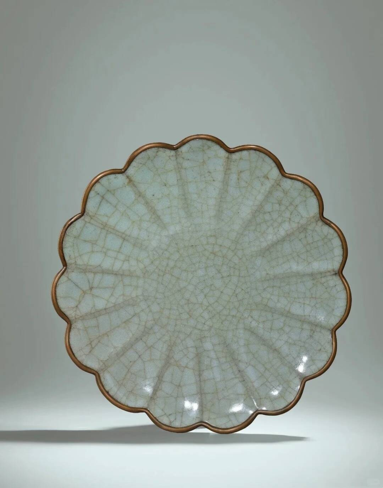
官窑 · 北宋官窑遗址成谜
南宋文献记载北宋官窑"京师自置窑烧造"，但汴京（今河南开封）因黄河多次泛滥，地下淤积层厚达数米，北宋官窑遗址至今未被考古发掘确认。目前学界主流观点认为，北宋官窑可能与汝窑存在技术传承关系，甚至部分器物由汝窑代烧，其工艺特征与官汝有诸多相似之处。

官窑 · 南宋官窑分"内窑""新窑"
南宋官窑分为修内司官窑（内窑）与郊坛下官窑（新窑）。修内司官窑位于杭州凤凰山，是南宋初期为皇室烧制瓷器的核心窑口，釉色莹润如玉，开片细密，工艺精湛；郊坛下官窑位于杭州乌龟山，是后期官窑，器物造型更规整，胎釉略厚，产量稍大，满足皇室日常使用需求。

官窑 · "紫口铁足"非独有特征
官窑器物因胎体含铁量高，口沿处釉薄露出胎色呈紫色，圈足无釉处呈铁黑色，即"紫口铁足"。但考古发现，部分哥窑、龙泉窑黑胎青瓷也有此特征，不能仅凭这一特征判定为南宋官窑，需结合釉色、开片、造型等多重因素综合判断。

哥窑 · 窑址之谜至今未解
哥窑是五大名窑中唯一未找到公认窑址的窑口。学界主流观点有两派：一派认为哥窑是南宋龙泉窑的特殊品种（龙泉哥窑）；另一派认为哥窑是北宋汴京官窑或南宋修内司官窑的分支。目前考古仅发现传世哥窑器物，未找到对应的窑址遗存，窑址争议至今仍未平息。
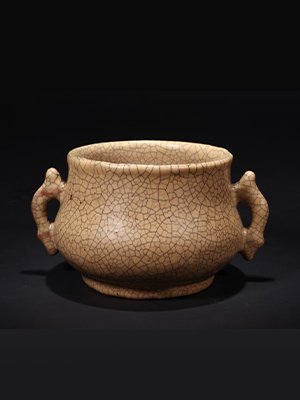
哥窑 · "金丝铁线"是后天形成
哥窑的标志性特征"金丝铁线"（粗黑的大开片与细密的金黄色小开片交织），并非烧制时的刻意设计，而是釉面冷却时的自然开片。之后通过人工染色形成：用铁汁染粗纹形成"铁线"，用茶叶汁或草木灰染细纹形成"金丝"，且开片会随时间推移缓慢变化，每一件哥窑的开片纹路都是独一无二的。
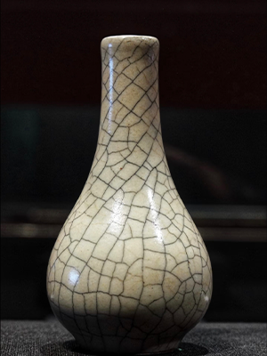
哥窑 · 传世器与文献记载有差异
明代文献记载"哥窑与龙泉窑皆出处州龙泉县，南宋时有章生一、章生二兄弟各主一窑"，但传世哥窑的胎釉特征（胎体厚重、釉色灰青、开片独特）与龙泉窑遗址出土的黑胎青瓷存在明显差异，这也是哥窑窑址争议的核心原因之一，目前尚无定论能完全统一学界观点。
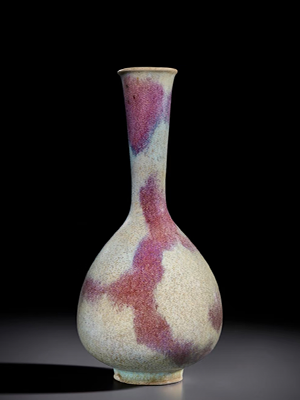
钧窑 · 从民窑到宫廷御用
钧窑创烧于唐代，北宋中期至晚期，因釉色独特（窑变蓝、红、紫相间）被皇室看中，在禹州钧台设立官窑作坊，但民间钧窑仍大量烧制。考古发现，钧台窑遗址有明确的官窑区与民窑区，官窑器物造型规整，釉色绚丽，多为陈设器；民窑器物则多为碗、盘等实用器，釉色相对单一。

钧窑 · "蚯蚓走泥纹"是工艺缺陷
钧釉中的"蚯蚓走泥纹"（釉面蜿蜒曲折的细线纹），是烧制时釉层局部流动不均，导致釉面开裂后，下层釉料填充形成的。这原本是烧制过程中的工艺缺陷，但因形态自然、独具韵味，被宋代工匠保留并成为钧窑的标志性特征之一，深受后世喜爱。
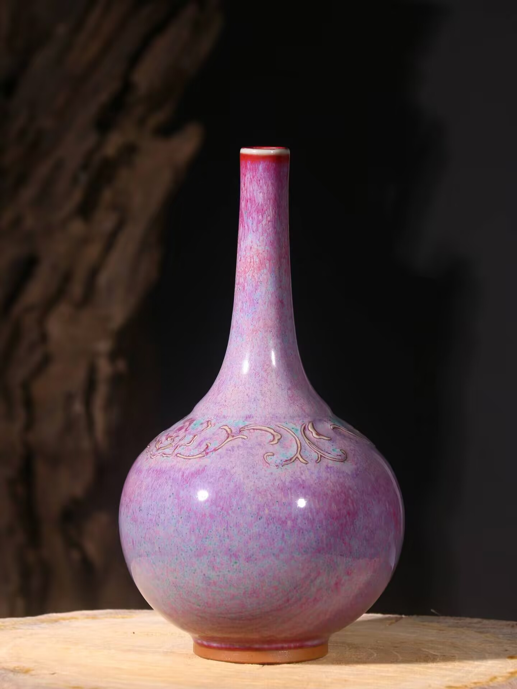
钧窑 · 并非全是"入窑一色，出窑万彩"
钧窑的窑变釉是其核心特色，但考古发现，部分钧窑器物（尤其是民窑实用器）釉色稳定，多为天蓝、月白等单色釉，并非所有器物都有绚丽的窑变效果。且官窑钧窑的釉色配方相对固定，窑变范围可控，主要呈现蓝、红、紫等经典配色，并非完全随机。
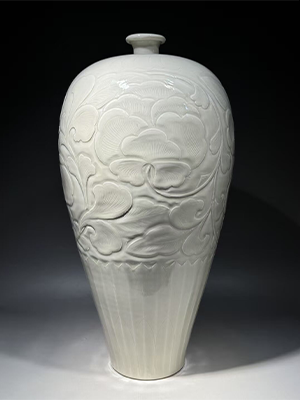
定窑 · 五大名窑中唯一白瓷代表
其他四大名窑均以青瓷或窑变釉瓷为主，而定窑专注于白瓷烧制，且工艺精湛，是宋代白瓷的巅峰代表。其白釉温润如玉，带有柔和的象牙白质感，区别于其他窑口的冷白釉色，形成了独特的审美风格，影响了整个北方白瓷窑系的发展。
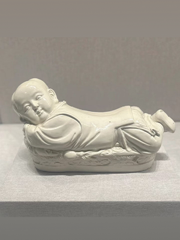
定窑 · "芒口"曾遭皇室嫌弃
定窑为提高产量发明了"覆烧法"（器物倒扣在匣钵中烧制），但这种工艺会导致器物口沿无釉，形成边缘粗糙的"芒口"。北宋徽宗时期，皇室因"芒口"不美观且使用不便，曾下令禁止定窑贡瓷，转而选用汝窑等釉色完整的瓷器。后来古人通过镶嵌金属扣边解决了这一问题，成为定窑特色。
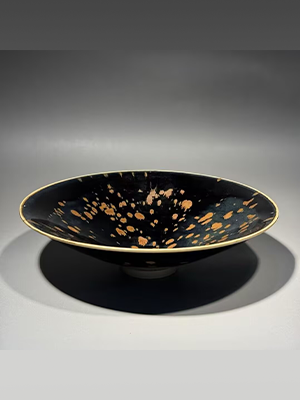
定窑 · 珍稀品种不止白瓷
定窑并非只有白瓷，还烧制紫定（酱色釉）、黑定（黑色釉）、绿定（绿色釉）等珍稀品种。这些品种产量极低，存世量稀少，其中绿定最为罕见，目前全球仅发现数件完整器，价值极高，比普通白定珍贵得多，是收藏界的稀世之宝。
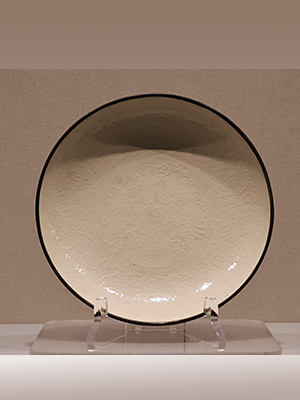
定窑 · 装饰工艺影响北方窑系
定窑的装饰工艺极为精湛，刻花线条流畅自然，划花灵动飘逸，印花图案规整精美，尤其印花工艺，是宋代印花白瓷的巅峰。其工艺被磁州窑、耀州窑等北方窑系广泛借鉴，对宋代北方瓷器的装饰风格产生了深远影响，形成了独具特色的北方印花瓷体系。
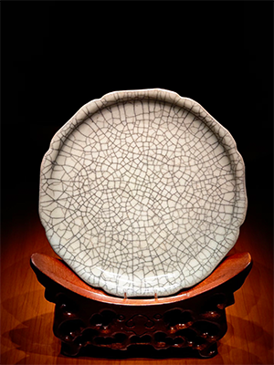
跨窑口 · "五大名窑"概念源于明代
宋代五大名窑的概念，并非宋代提出，而是明代文献（如《宣德鼎彝谱》）中首次明确记载"内库所藏柴、汝、官、哥、钧、定各窑器皿"，之后"五大名窑"（柴窑存世争议大，故以汝、官、哥、钧、定为核心）的说法被后世学界沿用，成为中国陶瓷史上的经典分类。
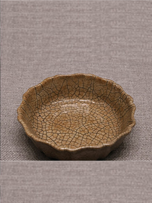
跨窑口 · 并非全是"宫廷直属窑场"
五大名窑的"官窑"属性并非完全一致：汝窑、南宋官窑是专门为皇室烧制的"宫廷直属窑场"，从原料、工艺到成品均由宫廷管控；而定窑、钧窑最初是民窑，后期因釉色或工艺独特被宫廷征用，设立官窑作坊，民间仍继续烧制，属于"官搭民烧"或"宫廷征用"的模式。
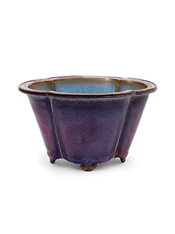
跨窑口 · 宋代名窑瓷并非全为皇家专用
宋代五大名窑的器物，在宋代并非全部是"皇家专用"。官窑的精品器物确实仅供皇室使用，不合格品会被销毁；但民窑烧制的汝窑、钧窑、定窑等器物，会通过贸易流入民间，成为文人、富商的收藏品或日常用器，只是官窑器物的存世量极少，且多被历代皇室收藏流传。